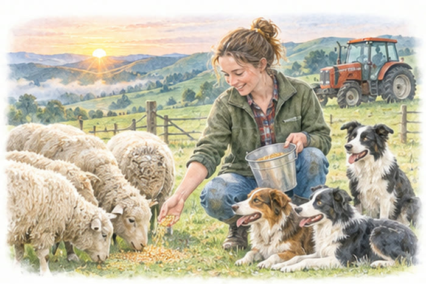

Listen to the text
Speed:

My aunt Larysa is a travel writer. People often ask her how she got this job. She always tells the same story. "I was twenty-two. I had just finished university, and I was working in an office. I was sitting at my desk one grey Monday when I saw an advert: 'Volunteers are needed on a farm in New Zealand.' I had never been abroad. I had never even flown. I bought a ticket the same week. My mother cried. My boss thought that I had lost my mind. I spent six months on that farm. I got up at five every day. While other volunteers were sleeping, I was feeding two hundred sheep. I learned to drive a tractor. I had always been afraid of dogs, but there I made friends with three of them. One evening I was writing a letter to my mother when the farmer's wife asked, 'Why don't you send your stories to a magazine?' I had never thought about it. I sent one. It was published. Since then I have visited forty-one countries. I have written three books. I have slept in a tent in the Sahara and in an ice hotel in Canada. Now I live in Kyiv again. I teach young writers, and I am working on my fourth book. It is about Ukraine. After all my travels I have understood that I don't know my own country well enough. People think that travelling changes the place where you live. It doesn't. It changes the way you see." I am fourteen. I haven't been anywhere yet. But I have already started a notebook.
Tap any sentence to hear it again.
Сподобалось? На сайті ще більше матеріалів для вчителів!
Reader, презентації, ігри, діагностичні та контрольні роботи до підручників 1-11 класів.
Перейти на сайт materials.allaenglish.com